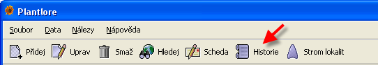
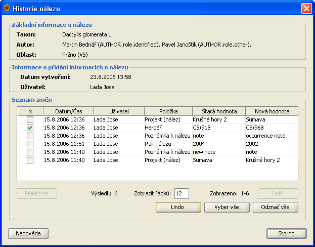
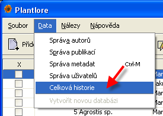
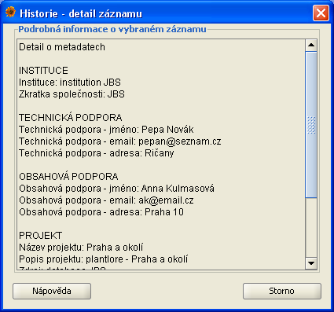

Historie úprav
Plantlore vám nabízí možnost sledovat historii změn vašich nálezových dat. Diky této funkci máte možnost zjistit kdo, kdy a jak změnil informace o
konkrétním nálezu, autorovi, publikaci či metadatech.
Mezi základní zaznamenéváné informace o změně patří:
- datum a čas změny
- typ operace (vložení, editování, smazání)
- jméno uživatel, který změnu provedl
- název editované položky, nebo identifikace vloženého/smzaného záznamu
- stará hodnota editované položky
- nová hodnota editované položky
Plantlore kromě možnosti sledovat zmíněné změny v nálezových datech vám umožní zrušit některé změny a vrátit se tak k dřívějším hodnotám. Historie
je silným nástrojem umožňující zásah do vašich nálezových dat a proto je nutne, aby práce s historií byla z bezpečnostních důvodů omezena jen na uživatele, kteří mají dostatečné oprávnění (viz. Práva uživatelů).
Exitují dva odlišné způsoby práce s historií úprav:
Historie nálezu - dává uživatelovi možnost sledovat historii změn vybraného nálezu a použít operaci UNDO na vybrané změny
Celková historie - dává administrátorovi nástroj pro kontrolu provedených změn v datech a možnost provést operaci UNDO ke konkrétnímu datumu/času
Historie nálezu

Pro přístup k historii vybraného nálezu stačí jen označit tento nález a kliknout na tlačítko History. Pokud je tlačítko History
neaktivní a přístup k hsitorii úprav vám byl tímto znemožněn, tak nemáte právo na práci s vybraným nálezem. Určitě nebude naškodu
zmínit, kdy máte právo pracovat s historií nálezu.
Historie nálezu je přístupná:
- uživatelovi, který daný nález vložil do databáze
- uživatelovi, který má právo editovat záznamy uživatele, který tento nález vložil do databáze
- uživatelovi, který má právo editovat všechny nálezy uložené v databázi
- uživatelovi, který má právo administrátor
Pokud nemáte přístup k historii nálezu a chtěli byste ho získat, tak kontaktujte administrátora Plantlore.
Podrobnější informace o právech uživatelů můžete nastudovat v časti Práva uživatelů.
Dialog historie nálezu

Dialog historie nálezu je rozdělen do tří částí.
- Detaily nálezu - zde jsou zobrazeny základní informace o nálezu (taxon, autoři nálezu a lokalita)
- Vytvoření nálezu - zde jsou zobrazeny informace o vložení nálezu do databáze (datum/čas vložení a uživatel, který záznam vložil do databáze)
- Seznam změn - zde jsou zobrazeny základní informace o jednotlivých změnách nálezu
Seznam změn
Seznam změn nálezu je setřízen od časově nejmladších po časově nejstarší změnu a je zobrazen v tabulce, která obsahuje následující údaje:
- X - slouží pro výběr jednotlivých změn
- Datum/Čas - informuje o době, kdy ke změně došlo
- Uživatel - odpovídá uživatelovi, který změnu provedl
- Položka - informuje o položce, která byla změněna
- Stará hodnota - obsahuje hodnotu položky před změnou
- Nová hodnota - obseahuje novou hodnotu položky
Operace UNDO na vybrané položky
V historii nálezu si můžete vybrat změnu jen konkrétní položky v záznamu a vrátit se k její staré hodnotě. Liší se tedy od klasické UNDO operace,
kde se proveděné změny v záznamu vrací od nejmladší po nejstarší v časovém sledu v jakém k nim došlo. Uveďmě si příklad, kdy využijeme zmíněného
vylepšení operace UNDO:
Uděláte opravy položek "Herbář", "Rok nálezu", "Poznámku k nálezu" a po těchto opravách uděláte ještě dalších dvacet změnám.
Už si nepamatujete přesně první uložené znění poznámky k nálezu, ale chcete se k němu vrátit. U klasického operace UNDO byste museli zrušit postupně všechny
poslední změn, abyste nastavili zpět první znění poznáky k nálezu. V dialogu historie je splnění vašeho požadavku jednoduché. Pokud budete chtít jen
zjistit první znění poznámky k nálezu, stačí si v seznamu změn najít nejstarší zněmu poznámky a v sloupku STARÁ HODNOTA už vidíte hledaný text.
Pokud chcete poznámce nastavit její první uloženou hodnotu, tak stačí najít nejstarší změnu výsledku revize, vybrat daný řádek pomocí
sloupku X a kliknout na tlačítko UNDO. Nelekněte se, že výběrem daného řádku se vám vyberou i řádky, v kterých je zaznamenána mladší
změna této poznámky, toto chování vychází z logiky označování změn (popsáno níže).
Jak již bylo zmíněno, tak pomocí sloubku X vybíráte úpravy, které chcete vrátit. Označení či odznačení lze provést myší kliknutím v sloubku X požadovaného
řádku. Pro označování můžete využít i tlačítka Vyber vše a Odznač vše, která označí nebo odznačí všechny změny nálezu zobrazené v tabulce.
Počet položek zobrazených v tabulce si můžete sami nastavit přepsáním hodnoty pro Zobrazit řádků a potvrzením nové hodnoty klávesovým tlačítkem
ENTER. V tabulce se přepínáte na další nebo předchozí seznam změn pomocí tlačítek Předchozí a Následující. Informace o aktuálně
zobrazeném seznamu změn jsou uvedeny v části pod tabulkou.
Po stisknutí tlačítko UNDO se zobrazí informace se seznamem změn, které budou provedeny. Volbou tlačítka CANCLE zrušíte operaci.
Volbou tlačítka OK naopak potvrdíte operaci a provede se návrat vybraných změn nálezu. Z historie budou smazány všechny označené řádky v době zavolání
operace UNDO (na označené řádky byla provedena operace UNDO).
Logika označování změn
Položky v záznamu můžou být upravovány vícekrát, proto je při označování změn v dialogu historie nutné ošetřit několik situací (viz. níže).
Pro lepší názornější vysvětlení si to uveďme na příkladu:
Předpokládejme, že položka HERBÁŘ byla n-krát změněna. V dialogu historie existuje n řádků, které informují o změně položky HERBÁŘ. Ve výše
uvedeném obrázku je vidět změna HERBÁŘ 15.8.2006 11:39 z hodnoty CB/910 na hodnotu CB/913, mladší změna HERBÁŘ 15.8.2006 11:40 z hodnoty CB/913 na hodnotu CB/918
a nejmladší změna HERBÁŘ 15.8.2006 12:36 z hodnoty CB/918 na hodnotu CB/968.
Při označování a odznačování těchto změn může dojít k následujícím situacím:
- Uživatel se chce vrátit k situaci, kdy položka HERBÁŘ měla hodnotu CB/910. Musí tedy označit příslušný řádek se změnou z 15.8.2006 11:39. Protože
existují ještě mladší změny položky HERBÁŘ, budou označeny i řádky pro změny HERBÁŘ 15.8.2006 11:40 a HERBÁŘ 15.8.2006 12:36. Po zavolání operace
UNDO bude mít položka HERBÁŘ zvoleného zaznamu hodnotu CB/910 a z historie budou smazány všechny označené řádky.
- Uživatel má v dialogu označené změny položky HERBÁŘ z 15.8.2006 11:39, 15.8.2006 11:40 a 15.8.2006 12:36 a rozhodl se jen pro návrat změny z 15.8.2006 11:39, to je k hodnotě CB/918.
V této situaci musí uživatel odznačit změnu z 15.8.2006 11:40. Pokud by byly označeny i starší změny (např. 15.8.2006 11:39) položky HERBÁŘ,
budou odznačením změny z 15.8.2006 11:40 automaticky odznačeny.
- Uživatel má v dialogu označené změny položky HERBÁŘ z 15.8.2006 11:39, 15.8.2006 11:40 a 15.8.2006 12:36 a rozhodl se tyto změny neprovést.
K odznačení všech změn položky HERBÁŘ stačí odznačit nejmladší změnu a automaticky buou odznačny změny starší.
Uživatel odznačením mladší změny řekne, že chce zachovat tuto změnu položky HERBÁŘ.
Celková historie

Dialog celkové historie sledovaných změn je přístupný pouze uživatelovi s právem administrátora. Pokud máte administrátorská práva můžete tento
dialog otevří z menu Data/Celková historie. Pokud administrátorská práva nemáte je položka v menu pro vás neaktivní.
Dialog celkové historie
V dialogu je zobrazen seznam všech změn týkajících se metadat, nálezů, autorů a publikací. Tento seznam je setřízen od časově nejmladších po
časově nejstarší změnu a je zobrazen v tabulce, která obsahuje následující údaje:
- Datum/čas - informuje o době, kdy ke změně došlo
- Operace - informuje o operaci, která byla provedena (vložení, editování, smazání)
- Uživatel - odpovídá uživatelovi, který změnu provedl
- Položka - informuje o položce, která byla změněna
- Stará hodnota - obsahuje hodnotu položky před změnou (vyplněna jen pro operaci edit)
- Nová hodnota - obseahuje novou hodnotu položky (vyplněna jen pro operaci edit)

Pokud chcete zjistit podrobnější informace o nálezu, metadatech, autorovi nebo publikaci, tak označte řádek tabulky se změnou, pro kterou se
zajímate o podrobnější informace, a stiskněte tlačítko Detail.
Operace UNDO ke zvolenému datumu a času
Operace Undo vrací postupně změny provedené v databázi a to od časově nejmladší po časově nejstarší změnu. Před stisknutím tlačítka
UNDO je nutné označit řádek tabulky, do kterého (i včetně něj) se má provést návrat změn v databázi. Po stisknutí tlačítka Undo
se zobrazí informace o zvoleném datumu/čase pro tuto operaci. Následným potvrzením tlačítkem OK dojde k provedení operace UNDO a zároveň smazání
vrácených změn z historie.
Pročištění databáze a smazání historie
V databázi jsou uloženy i neaktivní záznamy, aby bylo možné pří operaci UNDO je opět aktivovat. Máte však možnost využí operace Smaž,
která pročistí databázi od neaktivních záznamů a zároveň smaže všechny data z historie. Před provedení této operace by bylo dobré provést zálohu
databáze. Po stisku tlačítka Smaž se objevi dilog s informaci o operaci, kterou se chystáte provést, a teprve po potvrzení tohoto
dialogu bude operace provedena.